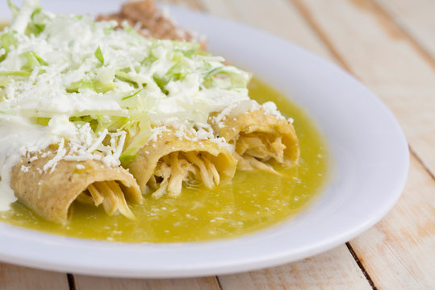

❮ VOLVER A LA GALERÍA
Enchiladas
Enchiladas Suizas Cremosas

Ingredientes (1/2)
6 tortillas de maíz
1 pechuga de pollo cocida y deshebrada
½ taza de queso manchego o Oaxaca rallado
¼ de cebolla en rodajas (opcional)
Aceite (para freír ligeramente)
Ingredientes Salsa
6 tomates verdes
1/4 de cebolla y 1 diente de ajo
1–2 chiles serranos (al gusto)
½ taza de crema y ¼ taza de leche
1 cda. de consomé de pollo (o sal)
1 cdita. de mantequilla o aceite
Preparación (1/2)
Cuece la salsa:
Hierve los tomates, cebolla, ajo y chiles por 10 min. Licúa con crema, leche y consomé.
Cocina la salsa:
En sartén, derrite mantequilla. Vierte la salsa, cocina a fuego medio 5 min.
Prepara tortillas:
Pásalas por aceite caliente rápido para suavizarlas.
Preparación (2/2)
Arma:
Rellena cada tortilla con pollo. Enróllalas en un refractario.
Baña y gratina:
Cubre con salsa y queso. Calienta hasta derretir.
🍽️ Para servir:
Decora con cebolla y crema. Acompaña con frijoles o arroz.
❮
❯